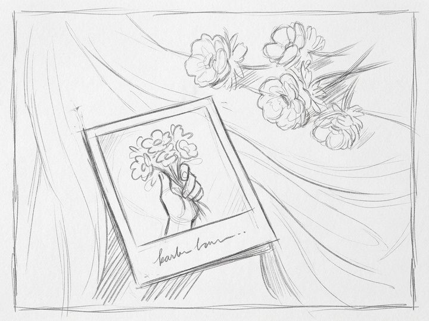

caso 01 · diseño editorial e ilustración
balas perdidas
Rediseño de la portada del álbum Balas perdidas de Morat. Una cámara que dispara recuerdos en lugar de balas.
Pasa el mouse sobre el boceto para ver la ilustración final. Desliza el dedo sobre el boceto para ver la ilustración final.
